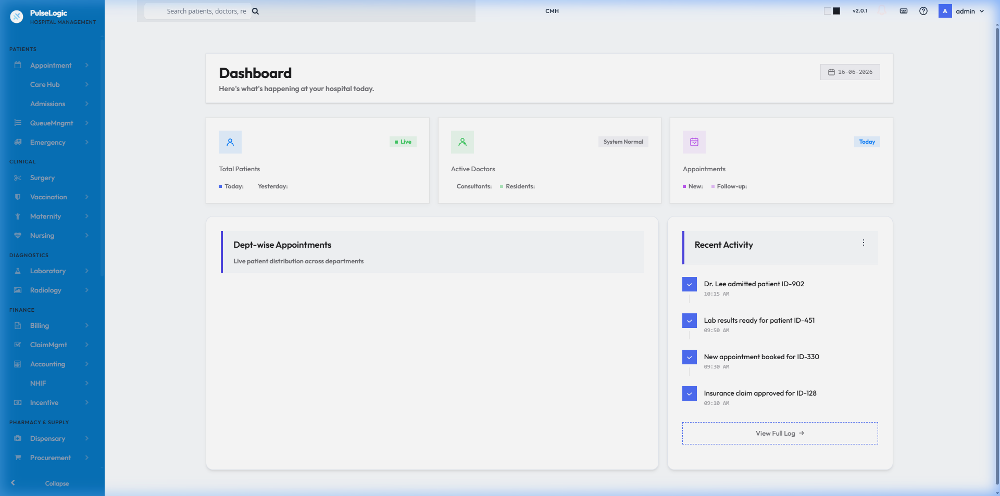
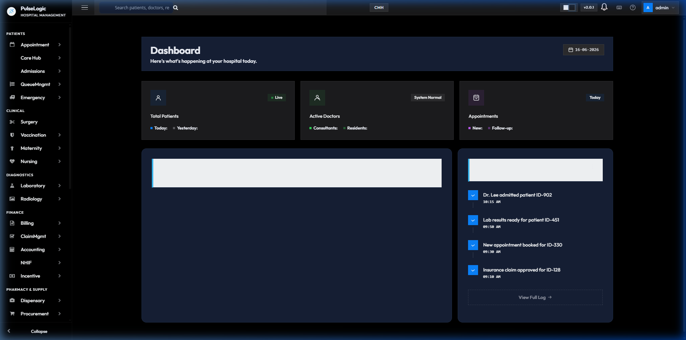
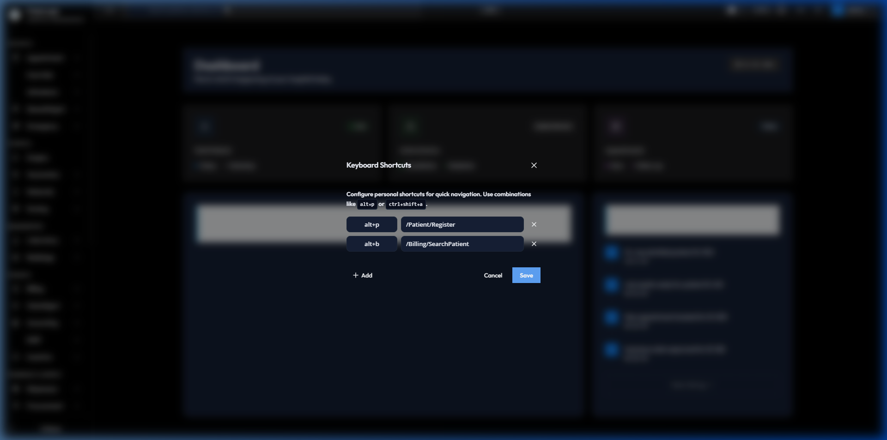
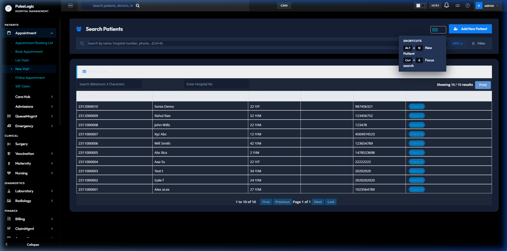
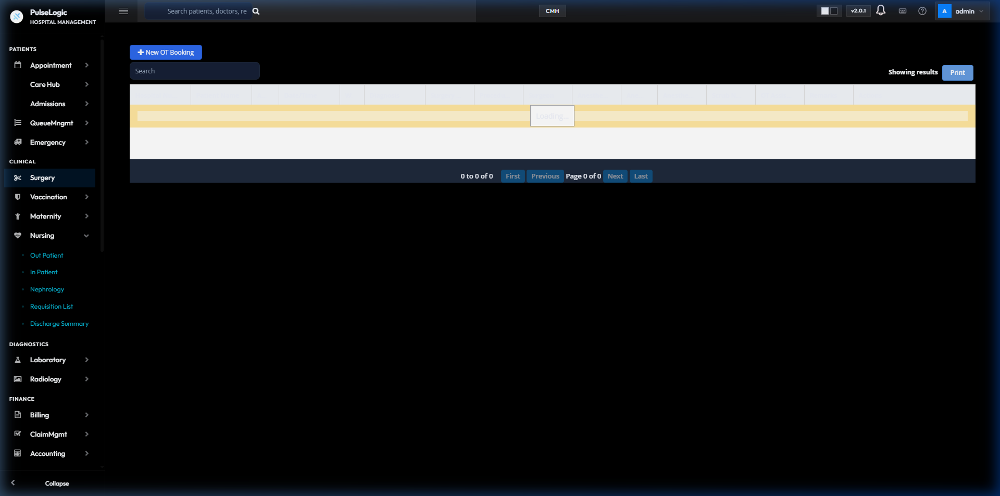
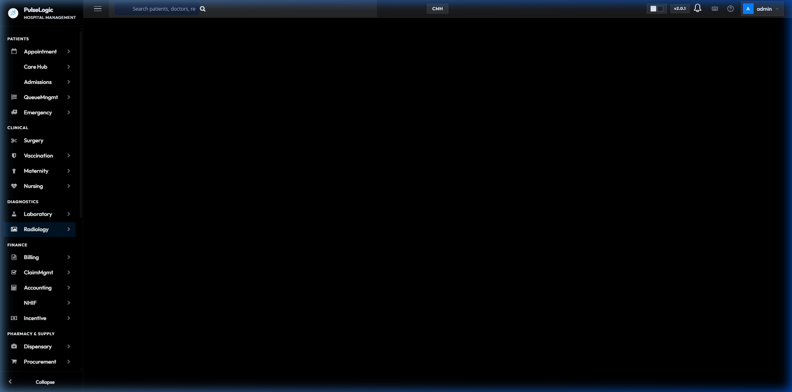
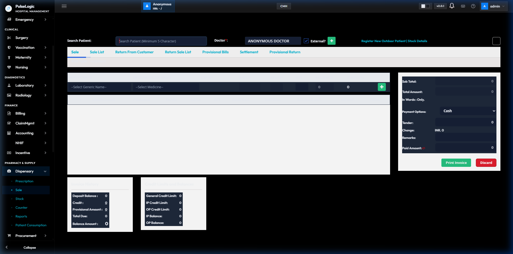
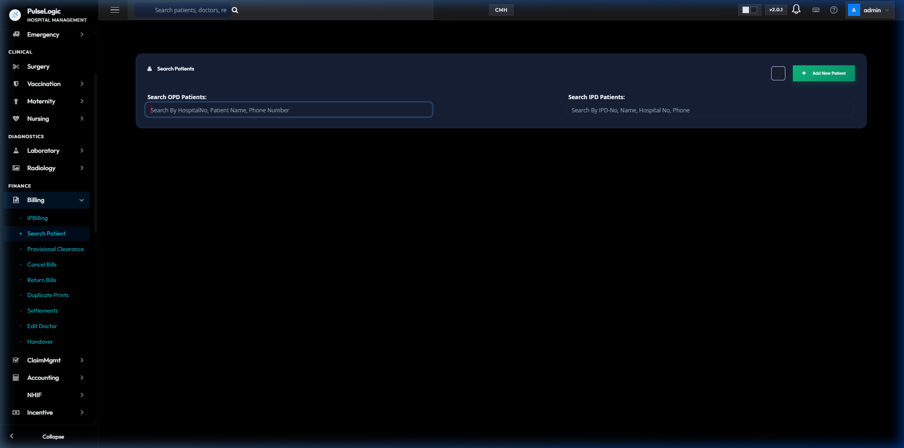

PulseLogicHMR User Manual (Phase 1)
Welcome to PulseLogicHMR, your premium hospital management system, reimagined with a modern, hyper-clean Apple HIG-inspired interface. This guide will walk you through navigating the new application and performing day-to-day hospital workflows.
1. Introduction & The New Interface
The PulseLogicHMR interface is designed for speed, clarity, and beauty.


The Dashboard & Top Bar
- Global Search: Located directly in the top center, the widened spotlight search bar allows you to quickly find patients, invoices, or modules from anywhere in the app.
- Keyboard Shortcuts: Click the keyboard icon next to the notifications bell to open the Shortcuts Menu. You can configure custom hotkeys (e.g.,
Alt+P for patient registration) to jump instantly to your most used modules.

- Theme Toggle: Switch between Light Mode and Dark Mode on the fly by clicking the sun/moon icons in the top right.
- User Profile: Click your avatar to access your profile settings, configure your date format (Gregorian/Nepali), and sign out securely.
2. Patients Module (Registration & Appointments)
The Patients group in the sidebar handles all front-desk operations, including registering new patients and managing their appointments.

Step-by-Step: Registering a New Patient
- In the sidebar under PATIENTS, click on Appointment.
- From the top-right corner of the Patient Search screen, click the + Add New Patient button.
- Fill Demographics: Enter the patient's mandatory details including First Name, Last Name, Age, Gender, and Contact Number.
- Select Patient Type: Choose whether the patient is a General, Insurance, or Corporate patient from the dropdown. This ensures correct billing tariffs are applied later.
- Save: Click the Register button. The system will automatically generate a unique Hospital Number (UHID).
Step-by-Step: Booking an Appointment
- Navigate to PATIENTS > Appointment.
- Use the Search Patients bar to find an existing patient by their Name, Phone, or newly generated UHID.
- Click the Check In button next to their name in the table.
- Select Doctor: Choose the target Department (e.g., Cardiology, Orthopedics) and pick the Consulting Doctor.
- Confirm & Print: Confirm the available time slot and print the appointment slip for the patient.
3. Clinical Module (Doctors & Surgery)
The Clinical group is the medical core of the hospital where doctors access the Electronic Medical Record (EMR), view patient queues, and plan surgeries.

Step-by-Step: Managing the OPD Queue
- In the sidebar under CLINICAL, click on Care Hub or Nursing > Out Patient.
- View Queue: The dashboard will display all patients who have checked in for their appointments today, separated into OPD (Outpatient) and IPD (Inpatient).
- Open EMR: Click on a patient's row to open their Electronic Medical Record.
Step-by-Step: Writing Clinical Notes & Prescribing
- Inside the patient's EMR, navigate to the Clinical Notes tab.
- Enter the patient's Chief Complaints, History of Present Illness (HPI), and physical examination findings.
- Order Investigations: Click the 'Orders' section to request Lab Tests or Radiology scans. These requests are sent digitally to the respective departments immediately.
- Prescribe Medications: Search for drugs from the formulary, specify dosage and frequency. Once saved, the prescription is instantly available at the Pharmacy Dispensary.
4. Diagnostics Module (Laboratory)
The Diagnostics group handles all Laboratory Information Systems (LIS) and Radiology workflows.

Step-by-Step: Processing Lab Orders
- In the sidebar under DIAGNOSTICS, click on Laboratory.
- Requisition List: The main dashboard displays all pending test orders placed by doctors.
- Sample Collection: Select an order to mark the sample as "Collected". The system will generate unique barcode labels for the test tubes.
- Enter Results: Once the analyzer completes the test, navigate to the "Add Result" screen to input the values. (If your hospital uses machine interfacing, values will auto-populate).
- Verify & Sign: A pathologist or senior technician must review the results and click Sign Report. Once signed, the report becomes visible in the Doctor's EMR and on the Patient Portal.
5. Pharmacy Module (Dispensary Sales)
The Pharmacy & Supply group manages drug dispensing, stock inventory, and procurement.

Step-by-Step: Dispensing Prescribed Medications
- In the sidebar under PHARMACY & SUPPLY, click on Dispensary.
- Ensure you have activated your shift counter (e.g., "Morning Counter").
- Load Prescription: In the "Search Patient" bar, scan the patient's hospital card or type their UHID. The system will automatically pull up the doctor's electronic prescription.
- Verify Stock & Batch: The items will populate in the grid. Select the specific batch/expiry for each drug. The system will calculate the total cost.
- Payment & Print: Select the Payment Option (Cash, Card, etc.), collect the amount, and click Print Invoice.
- Dispense: Hand the printed invoice and the medications to the patient. Inventory stock is automatically deducted upon sale.
6. Finance Module (Billing)
The Finance group handles out-patient invoicing, in-patient discharge billing, and insurance claims.

Step-by-Step: Outpatient (OPD) Billing
- In the sidebar under FINANCE, click on Billing.
- Use the Search OPD Patients input box to find the patient.
- Review Charges: The billing screen will load all pending charges accrued by the patient (e.g., Consultation fees, individual lab tests, procedures).
- Apply Discounts: If applicable, select a discount scheme or enter a manual discount amount (requires authorization).
- Settle Bill: Choose the Tender type, collect the cash/card payment, and print the receipt.
Step-by-Step: Inpatient (IPD) Billing & Discharge
- In the FINANCE > Billing menu, select the IPBilling sub-module or use the Search IPD Patients box.
- Aggregate Charges: The IPD billing module aggregates all charges accrued during the patient's entire stay (Bed charges, daily doctor visits, nursing procedures, OT charges, medications).
- Provisional Bill: Generate a provisional bill to show the patient's family their current running total.
- Final Discharge Bill: Once the doctor marks the patient "Ready for Discharge", generate the final bill.
- Clearance: After the final payment is settled, the system will mark the patient as eligible to physically leave the ward, notifying the nursing station.